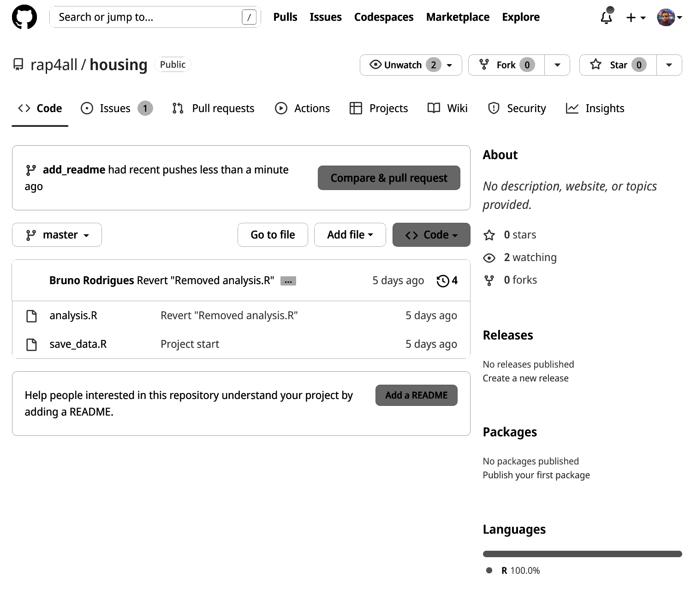
5 Colaboração com desenvolvimento Trunk-based
Como já referimos, há duas formas de colaboração com Git (e Github): como equipa, ou como desenvolvedor externo (ou seja, não sendo parte da equipa de desenvolvimento dum dado projecto). Os colaboradores externos apenas podem colaborar em repositórios públicos, e os donos do projecto podem aceitar ou não as emendas.
Vamos ver estas duas formas de colaboração. Primeiro focar-nos-emos na colaboração dentro duma equipa.
5.1 Colaborar como equipa
5.1.1 TBD básico
Lembremo-nos do issue que abrimos para o Bruno. O Bruno resolverá o issue adicionando um ficheiro README. Isto vai dar-nos a oportunidade de introduzir o desenvolvimento trunk-based (TBD). A ideia do desenvolvimento trunk-based é simples; os membros da equipa devem trabalhar em branches separados para adicionar funcionalidades ou corrigir bugs, e depois mergir o seu branch ao tronco (“trunk” que no nosso caso é o branch master) para adicionar as suas alterações ao código base principal. Este processo deve ser rápido, idealmente diário, ou assim que o novo código estiver pronto. Quando há muito trabalho que se acumula num branch durante vários dias ou semanas, o processo de mergir com o branch master pode ser doloroso. Se trabalharmos com branches de curta duração, quando surgirem conflitos, estes podem ser resolvidos rapidamente. Com isto facilitamos também a revisão do código, uma vez que assim o revisor apenas precisa de rever pequenas porções de código de cada vez. Se, ao contrário, com branches de longa duração com alterações em muito código para mergir, na revisão de todas as alterações e na resolução de conflitos que possam surgir, teremos muito mais trabalho. Para evitarmos este problema, o melhor é mergir diariamente ou sempre que adicionarmos uma parte de código, e muito importante, este código não pode quebrar todo o projecto (mais à frente usaremos testes unitários como garantia).
Resumindo, para evitarmos demasiado trabalho ao mergir branches que se afastaram demasiado do trunk, criaremos branches, adicionaremos o nosso código e mergimos com o trunk assim que possível. O mais cedo possível pode significar várias coisas, mas normalmente significa assim que uma funcionalidade foi adicionada, um bug foi corrigido, ou assim que adicionámos algum código que não quebra todo o projeto, mesmo que a funcionalidade que queríamos adicionar ainda não esteja concluída. A ideia é que se o merge falhar, deve falhar o mais cedo possível. As falhas precoces são mais fáceis de resolver.
O nosso objetivo deve ser fornecer um projeto funcional para qualquer pessoa que clone o branch master em qualquer momento e ainda oferecer uma maneira simples de instalar uma versão pontual do projeto).
Então, de volta ao nosso problema. Primeiro, o Bruno precisa clonar o repositório:
bruno@computer ➤ git clone git@github.com:rap4all/housing.gitPara adicionar uma funcionalidade, o Bruno precisa de criar um novo branch com o comando git checkout com a flag -b:
bruno@computer ➤ git checkout -b "add_readme"O projecto muda automaticamente para o novo branch:
Switched to a new branch 'add_readme'Podemos executar git status para verificarmos:
bruno@computer ➤ git statusOn branch add_readme
nothing to commit, working tree cleanO Bruno adiciona um novo ficheiro README.md com o seguinte texto:
# Housing data for Luxembourg
These scripts for the R programming language download nominal
housing prices from the *Observatoire de l'Habitat* and
tidy them up into a flat data frame.
- save_data.R: downloads, cleans, and creates data frames from the data
- analysis.R: creates plots of the dataVamos gravar e voltar a executar git status, para vermos o que aconteceu:
bruno@computer ➤ git statusO Git diz ao Bruno que o ficheiro README.md não está a ser rastreado:
On branch add_readme
Untracked files:
(use "git add <file>..." to include in what will be committed)
README.md
nothing added to commit but untracked files present (use "git add" to track)O Bruno vai então rastrear e fazer o push das alterações. Além disso, o Bruno vai usar um truque, quando fizer o push: como o Bruno está a trabalhar para resolver num issue, seria optimo se também o fechasse quando fizer o push. O que é possível referenciando o número do issue na mensagem de commit:
bruno@computer ➤ git add .
bruno@computer ➤ git commit -m "fixed #1"#1 é relativo ao número do issue (é o primeiro issue aberto no repositório). Assim, referenciando este issue com o seu número na mensagem de commit e fazendo o push, o issue fica fechado, automaticamente:
bruno@computer ➤ git push origin add_readmeComo podemos ver, o Bruno faz o push do branch add_readme (aberto para resolver o issue) e não do master. Se tentasse fazer o push do master seria impressa uma mensagem a dizer que o master está up-to-date. Vejamos o output depois do push do add_readme:
Enumerating objects: 4, done.
Counting objects: 100% (4/4), done.
Delta compression using up to 12 threads
Compressing objects: 100% (3/3), done.
Writing objects: 100% (3/3), 501 bytes | 501.00 KiB/s, done.
Total 3 (delta 0), reused 0 (delta 0), pack-reused 0
remote:
remote: Create a pull request for 'add_readme' on GitHub by visiting:
remote: https://github.com/rap4all/housing/ pull/new/add_readme
remote:
To github.com:rap4all/housing.git
* [new branch] add_readme -> add_readmeO Git diz-nos que o Bruno deve criar um pull request. Mas o que é isto? Bem, se quisermos mergir o nosso branch para o trunk, devemos fazê-lo através de um pull request. Vejanos o que o Bruno vê no Github:
O Bruno pode agora decidir continuar a trabalhar neste branch ou, uma vez que o objetivo deste branch era apenas adicionar o ficheiro README.md, decidir fazer um pull request.
Ao clicar no botão “Compare & pull request”, o Bruno vê agora isto:
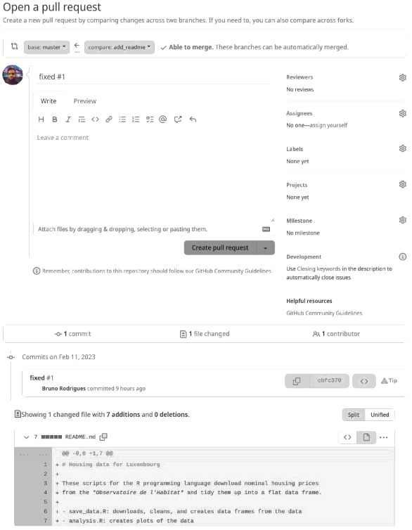
O Bruno pode deixar um comentário, ver o que mudou (neste caso, foi adicionado um único ficheiro) e, mais importante, adicionar um revisor, se necessário:
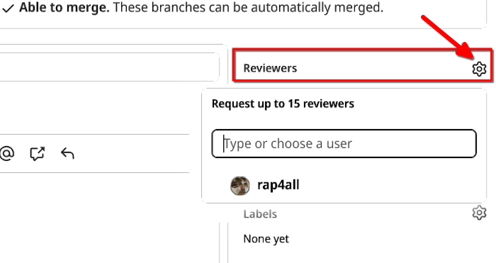
Isto é o que o Bruno vê agora:
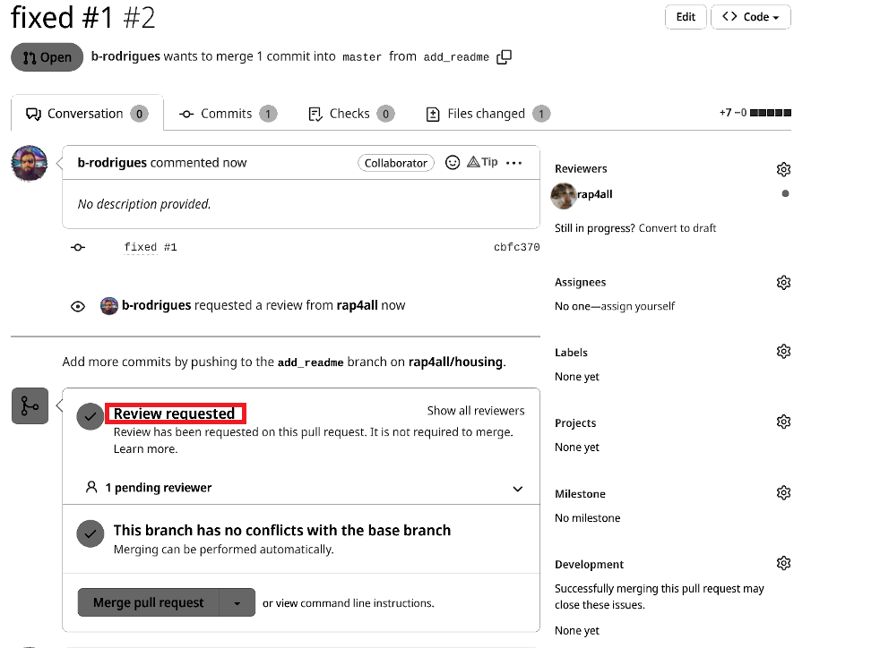
O Bruno pediu a revisão, mas o Github diz-nos que o branch pode ser mergido. Isto porque adicionámos um ficheiro e não tocámos em mais nada, e mais ninguém trabalhou no projeto enquanto o Bruno estava a trabalhar. Portanto, não há riscos de surgirem conflitos.
Vejamos o que o dono do projecto vê agora. O dono do projeto deveria ter recebido uma notificação para revisar o pull request:
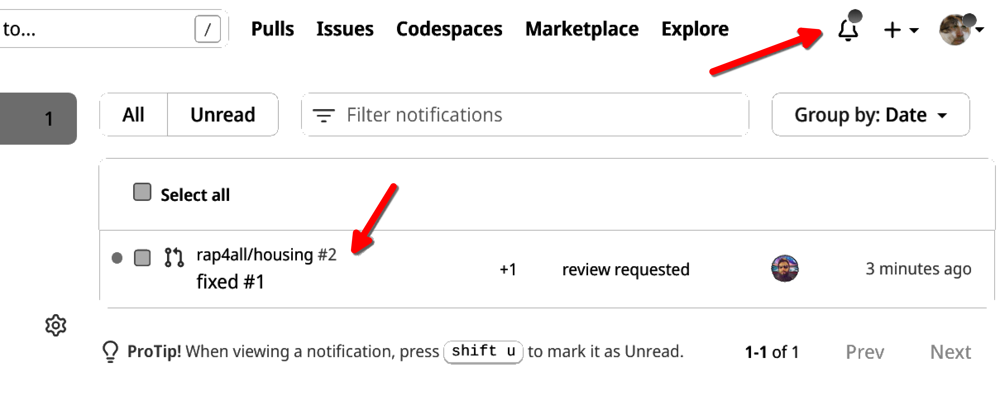
Ao clicar na notificação, o dono do projecto é levado para o ecrã:
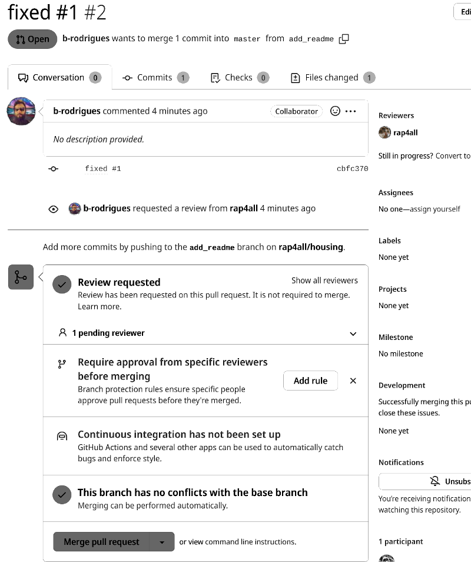
Aqui, o revisor pode verificar o commit, os ficheiros que foram alterados e ver se existem conflitos entre este código e o código base no branch master (ou trunk). O Github também nos diz duas coisas interessantes: o dono pode adicionar uma regra que diz que qualquer pull request deve ser aprovado, e também que a integração contínua não foi configurada (veremos o que isso significa na segunda parte deste livro).
Vamos adicionar uma regra que força cada pull request a ser aprovado. Ao clicar em “Add rule”, aparece o seguinte ecrã:
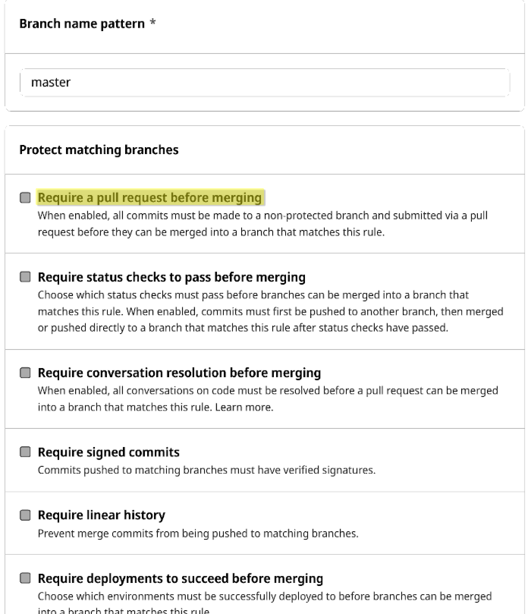
Clicando na primeira opção, outras opções aparecem:
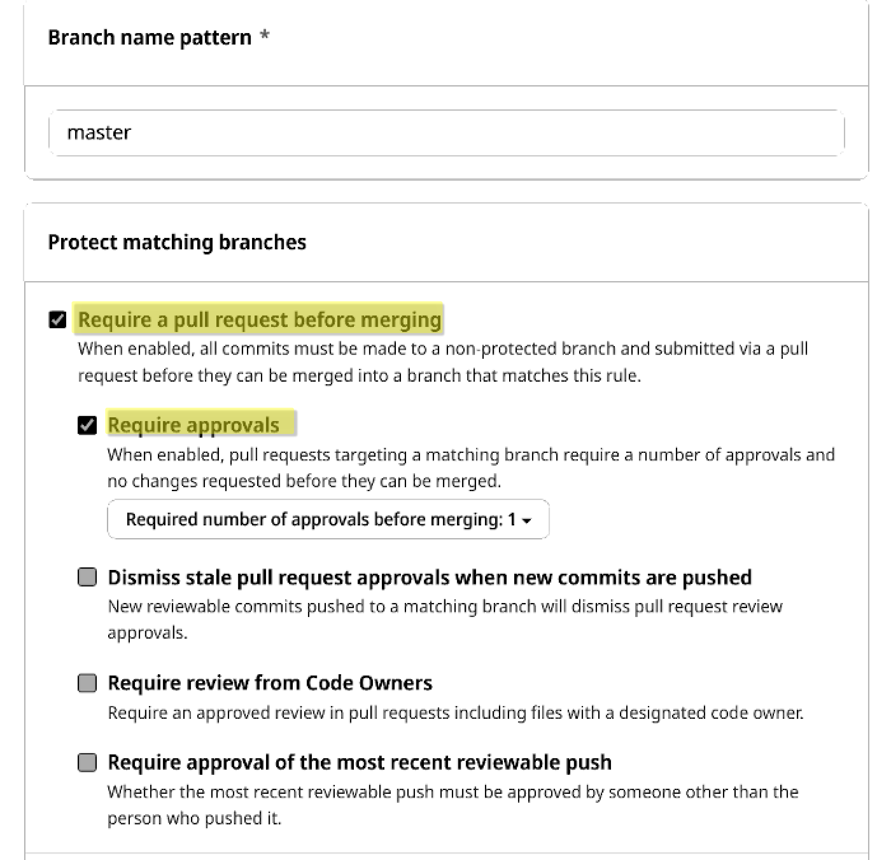
Ao escolher estas opções, o dono está a forçar o desenvolvimento trunk-based (bem, os colaboradores ainda têm de submeter pull request frequentemente, caso contrário, podemos deparar-nos com situações em que o merge pode ser muito difícil).
Vamos selecionar uma última opção: se descermos, podemos selcionar a opção “Do not allow bypassing the above settings”. Com isto garantimos que nem mesmo os administradores (os donos do projecto) podem contornar estas regras.
Voltemos ao pull request. Podemos ver que agora é requerida uma revisão:
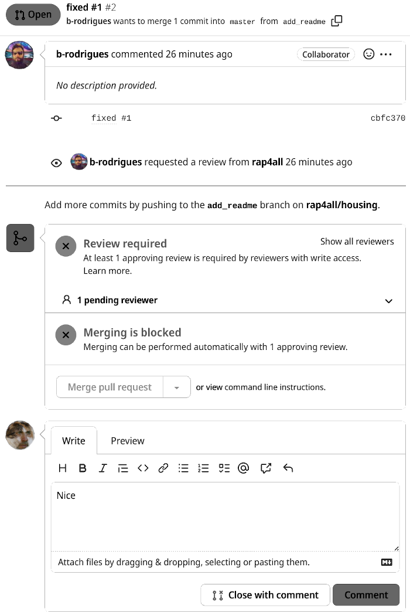
E o dono tem de ver os ficheiros que foram alterados:
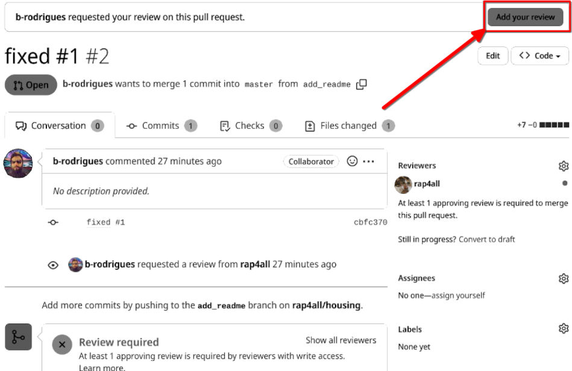
É possível adicionar comentários a linhas, individualmente:
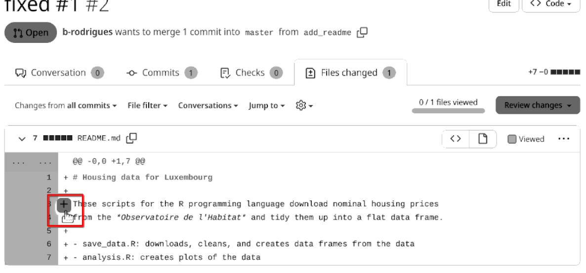
Ao clicarmos no sinal mais, aparece uma caixa onde podemos deixar um comentário. Neste caso está tudo bem pelo que o dono apenas tem de clicar no butão “Viewed”:
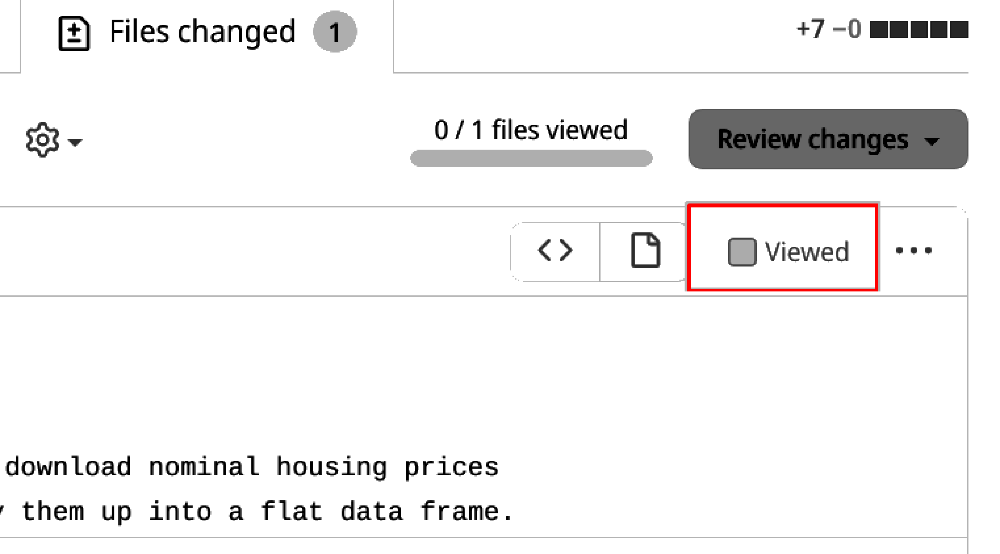
Ao clicarmos em “Review changes”, podemos adicionar um comentário geral, aprovar o pull request, ou pedir alterações que devem ser efectuadas antes do merge. Vamos aprovar:
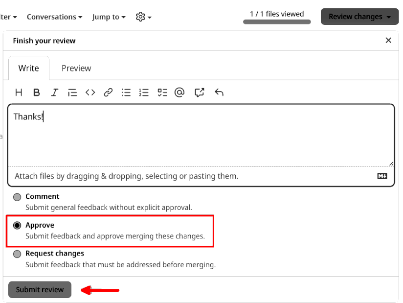
Ao submeter a revisão, o revisor volta para o issue:
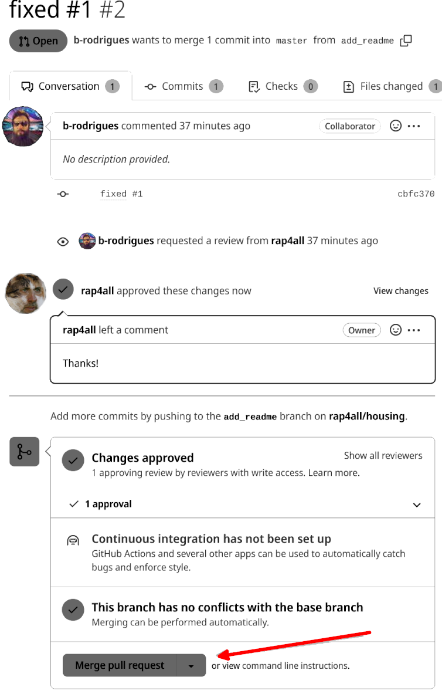
O revisor pode fazer o merge do pull request clicando no butão “Merge pull request”. O Github até sugere que apeguemos o branch que já cumpriu o seu propósito:
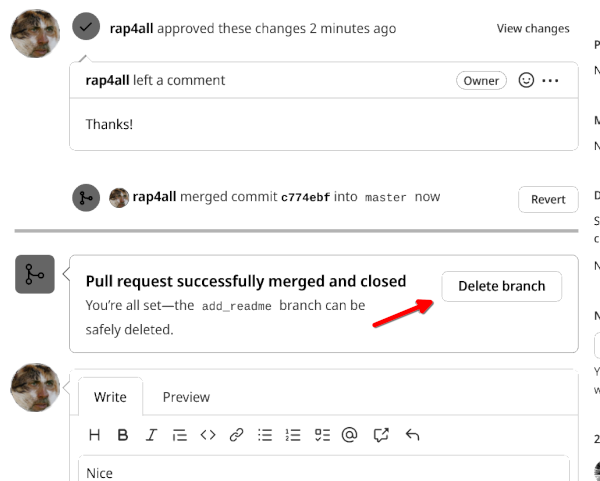
Vamos apagá-lo (podemos sempre restaurá-lo).
5.1.2 Tratando conflitos
Com referimos no capítulo anterior, o Git facilita o tratamento de conflitos. Sejamos claros; mesmo com o Git, às vezes pode ser complicado resolver conflitos. Mas devemos saber que se é complicado resolver conflitos com o Git, então é provavelmente impossível fazê-lo de outra forma qualquer, e que inevitavelmente teria de haver de alguém a corrigir os ficheiros manualmente. O que facilita a resolução de conflitos com o Git é o facto do Git nos dizer onde podemos encontrar os conflitos por linha. Por exemplo, se um colaborador alterar as primeiras 10 linhas dum ficheiro e outro alterar as 10 seguintes, então não haverá qualquer tipo de conflito e o Git pode fazer o merge automático de ambas as colaborações num único ficheiro. Outras ferramentas como o Dropbox, falhariam numa situação destas, uma vez que apenas conseguem lidar com conflitos por ficheiro. O mesmo ficcheiro foi alteardo por duas pessoas diferentes? Independentemente de onde aconteceram essas mudanças, temos um conflito para tratar, e pior nem sequer sabemos onde é que esses conflitos estão no ficheiro. Teriamos de verificar as duas cópias do ficheiro manualmente. o Git no caso em que as mesmas linhas são alteradas, destaca-as claramente, para que as possamos encontrar rapidamente e resolver os problemas.
Veremos tudo isto nas secções seguintes.
Mas como é que acontecem os conflitos. Imaginemos a seguinte situção. Tanto o Bruno como o dono do projecto criam os seus branches e editam o mesmo ficheiro. Talvez tenham falado por telefone e decidido acrescentar uma funcionalidade ou corrigir um bug. Talvez tenham decidido que não valia a pena abrir um issue e atribuir a tarefa a uma pessoa. A questão foi discutida pelo telefone e decidiram que o Bruo deveria fazê-lo. Ou seria o dono do projecto que ficou de fazê-lo? Já nenhum deles se lembra. De qualquer forma ambos decidem fazer a alteração no mesmo ficheiro pelo que surge um conflito.
Primeiro o Bruno precisa de voltar para o branch master no seu computador:
bruno@computer ➤ git checkout masterSwitched to branch 'master'
Your branch is behind 'origin/master' by 2 commits, and can be fast-forwarded.
(use "git pull" to update your local branch)O Git diz-nos que devemos atualizar o código no nosso computador executando git pull. Usamos o git push para subir código para o Github, e usamos o Git pull para baixarmos código do Github. Vamos executar e ver o que acontece:
bruno@computer ➤ git pullUpdating b7f82ee..c774ebf
Fast-forward
README.md | 7 +++++++
1 file changed, 7 insertions(+)
create mode 100644 README.mdForam atualizados ficheiros no computador do Bruno. O dono do projecto (que se chama owner) pode fazer o mesmo e verá o mesmo. Agora o Bruno cria um novo branch para trabalhar na nova funcionalidade:
bruno@computer ➤ git checkout -b add_cool_featureE o dono do projecto também cria um novo branch:
owner@localhost ➤ git checkout -b add_sweet_featureAgora ambos editam o mesmo ficheiro, analysis.R. O Bruno adicionou esta função:
make_plot <- function(country_level_data,
commune_level_data,
commune){
filtered_data <- commune_level_data %>%
filter(locality == commune)
data_to_plot <- bind_rows(
country_level_data,
filtered_data
)
ggplot(data_to_plot) +
geom_line(aes(y = pl_m2,
x = year,
group = locality,
colour = locality))
}Desta forma o Bruno pode apagar o código repetido e criar gráficos assim:
lux_plot <- make_plot(country_level_data,
commune_level_data,
communes[1])
# Esch sur Alzette
esch_plot <- make_plot(country_level_data,
commune_level_data,
communes[2])
# and so on...O resultado final é o mesmo, mas usando esta função, o código é mais curto e mais claro. Além disso se alguém quizer alterar o tema do gráfico apenas o tem de fazer num sítio e não para cada comunidade. Mas o que é que o dono do projecto alterou? O dono começou por eliminar a linha que carrega o package {purrr}, uma vez que nenhuma função do package estava a ser usada no script, e também alterou %>% para |>. Parece que foi esquecido mais do que apenas saber quem deveria fazer as alterações… De qualquer forma, ambos sobem as suas alterações dos seus respectivos branches. Aqui é a parte do Bruno:
bruno@computer ➤ git add .
bruno@computer ➤ git commit -m "make_plot() for plotting"
bruno@computer ➤ git push origin add_cool_featureEnumerating objects: 5, done.
Counting objects: 100% (5/5), done.
Delta compression using up to 12 threads
Compressing objects: 100% (3/3), done.
Writing objects: 100% (3/3), 647 bytes | 647.00 KiB/s, done.
Total 3 (delta 1), reused 0 (delta 0), pack-reused 0
remote: Resolving deltas: 100% (1/1), completed with 1 local object.
remote:
remote: Create a pull request for 'add_cool_feature' on GitHub by visiting:
remote: https://github.com/rap4all/housing/pull/new/add_cool_feature
remote:
To github.com:rap4all/housing.git
* [new branch] add_cool_feature -> add_cool_featuree esta é a parte do dono:
owner@localhost ➤ git add .
owner@localhost ➤ git commit -m "cleanup"
owner@localhost ➤ git push origin add_sweet_featureEnumerating objects: 5, done.
Counting objects: 100% (5/5), done.
Delta compression using up to 4 threads
Compressing objects: 100% (3/3), done.
Writing objects: 100% (3/3), 449 bytes | 449.00 KiB/s, done.
Total 3 (delta 1), reused 0 (delta 0)
remote: Resolving deltas: 100% (1/1), completed with 1 local object.
remote:
remote: Create a pull request for 'add_sweet_feature' on GitHub by visiting:
remote: https://github.com/rap4all/housing/pull/new/add_sweet_feature
remote:
To github.com:rap4all/housing.git
* [new branch] add_sweet_feature -> add_sweet_featureVejamos o que aconteceu: dois desenvolvedores alteraram o mesmo ficheiro, analysis.R, em dois branches diferentes. Ambos os branches precisam de ser mergidos no trunk.
Logo o Bruno faz um pull request:
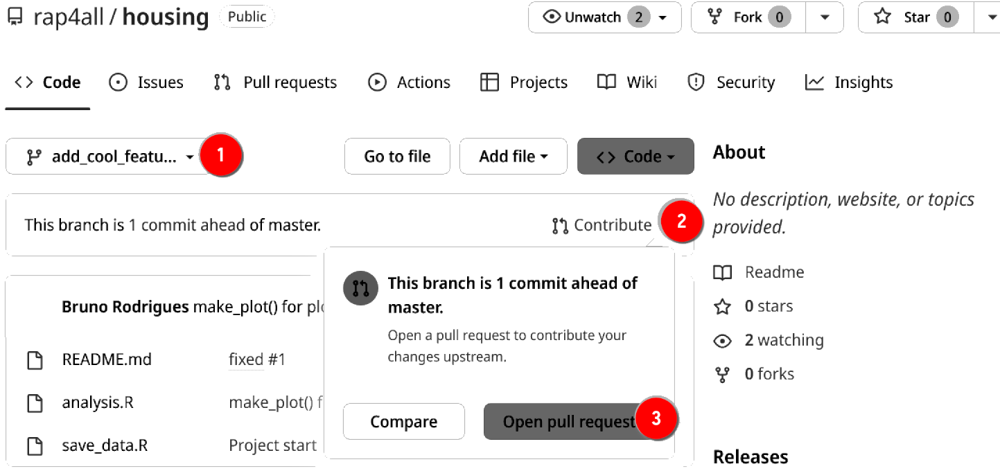
Primeiro seleciona o branch com a funcionalidade (1), depois clica em “Contribute” (2) e em “Open pull request” (3). O Bruno passa para o ecrã:
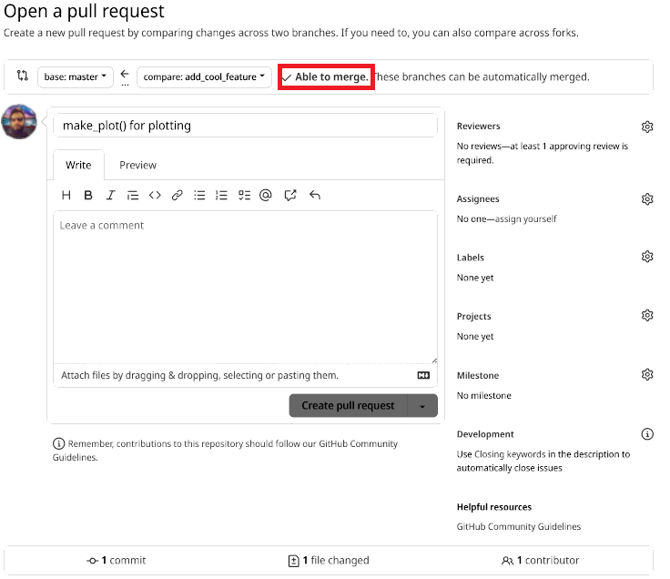
Agora o Bruno pode clicar em “Create pull request” mas como são requeridas revisões não está disponível o merge automático.
Vejamos o que acontece do lado do dono do projecto. Antes de mais, há uma notificação de que está pendente uma revisão:
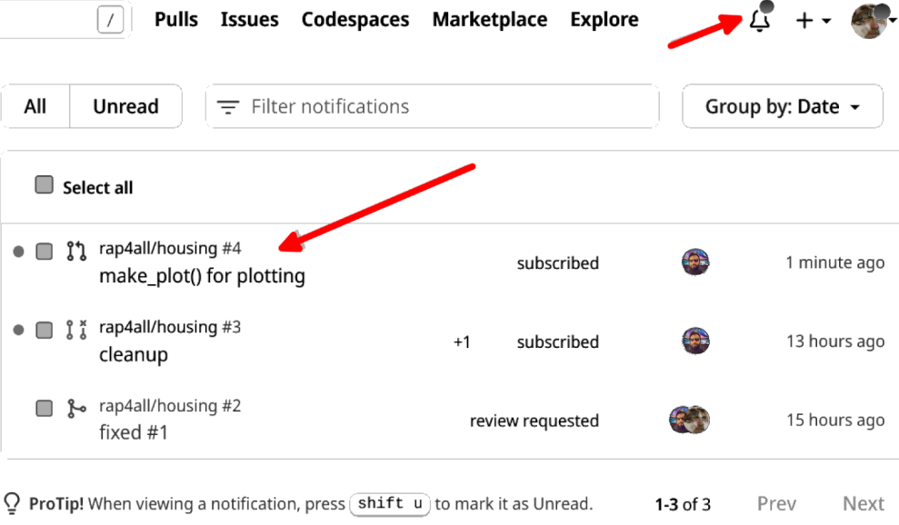
Ao clicar na notificação, o dono do projecto pode rever o pull request e decidir o que fazer com ele. Neste ponto, o dono ainda não abriu um pull request para a alteração que fez. E pode ser que seja uma coisa boa, pois pode ver que as alterações do Bruno entram em conflito com as alterações que ele fez.
Como podemos avançar? Simples. o dono do projecto pode decidir aprovar o pull request e fazer o merge das alterações do Bruno no branch master (ou trunk). E em vez de abrir um pull request para fazer o merge das suas próprias alterações no trunk, o causaria um conflito, pode fazer merge das alterações do trunk para o seu branch (em que fez as suas alterações). Isto também criará um conflito, mas agora o dono pode lidar com ele mais facilmente na sua máquina e depois só tem de fazer o push dum novo commit com ambas as alterações integradas. A imagem seguinte descreve este workflow:

Primeiro passo, o dono revê e aprova o pull request do Bruno:
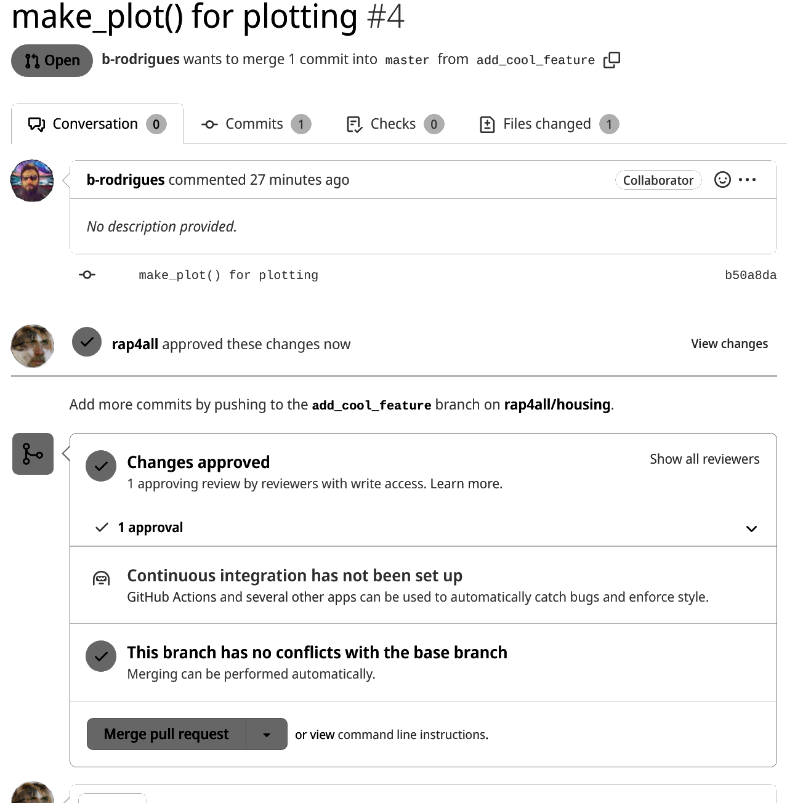
É feito o merge do pull request e o branch é apagado. Não faz sentido que o dono do projecto faça um pull request com as suas alterações pois criariam um conflito que teria de resolver. Assim o dono do projecto volta para o seu computador e faz um update do código no seu branch em que está a fazer alterações, ao fazer o merge do master no seu branch.
O dono do projecto confirma que está a trabalhar no seu branch de alterações:
owner@localhost ➤ git statusOn branch add_sweet_feature
nothing to commit, working tree cleanAgora pode fazer o update com o código do master, executando git pull:
owner@localhost ➤ git pull origin masterO dono vê a seguinte mensagem.
remote: Enumerating objects: 6, done.
remote: Counting objects: 100% (6/6), done.
remote: Compressing objects: 100% (3/3), done.
remote: Total 4 (delta 1), reused 3 (delta 1), pack-reused 0
Unpacking objects: 100% (4/4), 1.23 KiB | 418.00 KiB/s, done.
From github.com:rap4all/housing
* branch master -> FETCH_HEAD
c774ebf..a43c68f master -> origin/master
Auto-merging analysis.R
CONFLICT (content): Merge conflict in analysis.R
Automatic merge failed; fix conflicts and then commit the result.O Git detecta que há alguns conflitos e avisa que têm de ser resolvidos para depois se fazer o commit. Vamos abrir o ficheiro analysis.R e ver com está (link1). Primeiro, podemos ver que o Git lida com os conflitos linha a linha. Logo, cada linha alterada pelo dono que não está em conflito com as alterações do Bruno é automaticamente atualizada, refletindo as alterações do dono. Por exemplo, a linha que que carrega o package {purrr} foi apagada e todos os %>% passaram a |>. Estas alterações foram feitas sem problemas.
Agora temos de perceber o que acontece quando são detectados conflitos em algumas linhas. Por exemplo, o primeiro conflito que vemos:
<<<<<<< HEAD
filtered_data <- commune_level_data |>
filter(locality == communes[1])
=======
filtered_data <- commune_level_data %>%
filter(locality == commune)
>>>>>>> a43c68f5596563ffca33b3729451bffc762782c3Vemos o aspecto das linhas no computados do dono e o seu aspecto no branch master (ou trunk). As linhas entre <<<<<<< HEAD e ======= são as que pertencem ao branch das alterações do dono. As linhas entre ======= and >>>>>>> a43c68f5596563ffca33b3729451bffc762782c3 são as do branch master. A cadeia longa de caracteres que começa com a43c68f é o hash do commit de onde vêm aquelas linhas.
Isto facilita muito as coisas; apenas precisamos de eliminar o código que não está atualizado fazer o commit e o push do ficheiro corrigido. Neste caso o dono do projecto apenas tem de eliminar <<<<<<< HEAD e ======= e tudo o que está entre estas linhas, bem como as linhas com o hash. O dono do projecto agora apenas tem de fazer commit, push das alterações, abrir um pull request, pedir ao Bruno para rever as alterações e fazer o merge de tudo no master.
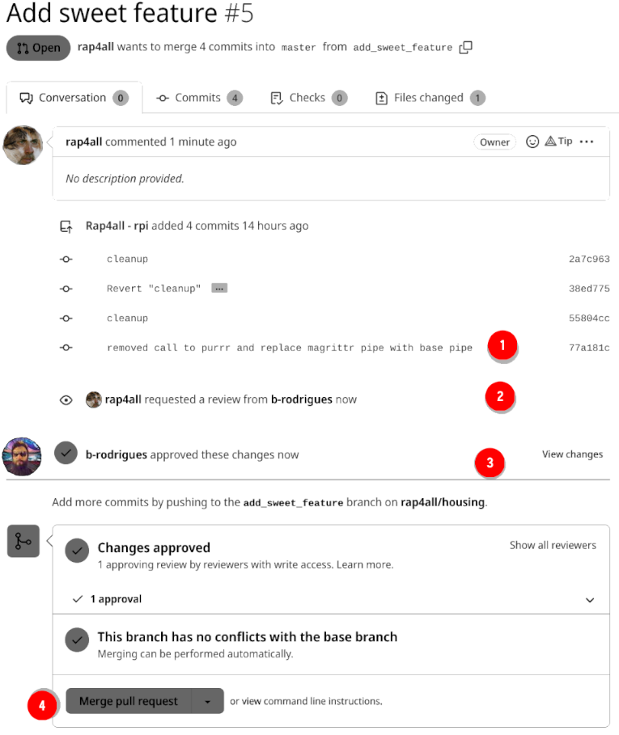
Em (1) vemos o commit que lida com os conflitos, em (2) o dono pede a revisão do Bruno e em (3) vemos que o Bruno fez a revisão e aprovou. Finalmente, é feito o merge do pull request e o branch é apagado.
5.1.3 Culpar a pessoa certa
Se há muitas pessoas a colaborar num projecto, pode ser difícil sabermos quem alterou o quê e quando o fez. É aqui que o comando git blame é útil. Se quisermos saber quem alterou o ficheiro analysis.R, apenas temos de executar:
owner@localhost ➤ git blame analysis.Re veremos o histórico detalhado, linha a linha com o nome dos colaboradores e a data:
b7f82ee1 (Bruno 2023-02-05 18:03:37 +0100 24) #Let’s also compute it...
b7f82ee1 (Bruno 2023-02-05 18:03:37 +0100 25)
55804ccb (Owner 2023-02-11 22:33:20 +0000 26) country_level_data <- ...
55804ccb (Owner 2023-02-11 22:33:20 +0000 27) mutate(p0 = ifelse(y...Podemos ver que o Bruno alterou as linhas 24 e 25 no dia 5 de fevereiro como parte do commit com o hash b7f82ee1, enquanto que o dono do repositório alterou as linhas 26 e 27 no dia 11 de fevereiro como parte do commit com o hash 55804ccb.
Podemos aproveitar o git blame para termos uma visão das alterações em cada ficheiro.
5.1.4 TBD simplificado
O workflow que foi aqui apresentado pode parecer um pouco rigido para equipas pequenas (menos de 4 ou 5 colaboradores). Podemos sempre adoptar uma versão simplificada do desenvolvimento trunk-based (TBD) em que os colaboradores não precisam de abrir pull requests para fazer o merge dos seus branchs com novas funcionalidades no trunk, e em que não precisamos de revisores. Nestes casos o Git força-nos a fazer pull das alterações caso já tenha havido alguém a mergir o seu branch antes de nós. Assim, ao fazermos o pull podem surgir conflitos e é responsabilidade nossa resolver esses eventuais conflitos, fazer o commit e depois o push com os conflitos resolvidos. Outro colaborador que queira fazer o merge do seu branch no trunk terá de fazer novo pull e garantir que resolve os conflitos (caso existam) antes de fazer esse merge. Se não surgirem conflitos (por exemplo, no caso de dois colaboradores estarem a trabalhar em ficheiros diferentes, ou linhas diferentes do mesmo ficheiro) então não é necessário resolve-los e ambos podem fazer merge dos respectivos branches no master.
5.1.5 Conclusão
Os principais conceitos do desenvolvimento trunk-based são:
- Cada colaborador abre o seu novo branch para desenvolver uma funcionalidade ou corrigir um bug, e trabalha sozinho no seu branch;
- No final do dia (ou após um determinado periodo de tempo previamente acordado), é necessário fazer o merge de todos os branches;
- Nesta altura é necessário resolver todos os conflitos;
- Se uma determinada funcionalidade pode demorar mais do que um dia então deve ser dividida em tarefas mais pequenas que possam ser mergidas diariamente. No início estas contribuições podem ser simples marcadores de posição que são gradualmente preenchidos com código até que seja possível implementar a funcionalidade. Esta estratégia é chamada de branching by abstraction;
- O branch master (ou trunk) contém sempre código funcional, de nível de produção;
- Para impor alguma disciplina, pode valer a pena obrigar a abrir pull request para fazer merge no trunk e também requerer a revisão.
5.2 Contribuir com repositórios públicos
Nesta última secção, vamos ver como podemos contribuircom um projecto quando não fazemos parte da equipa desse projecto. Por exemplo, se formos utilizadores dum package R, encontrarmos um bug e quisermos propor uma solução. Ou se apenas detectamos um erro ortográfico num README desse package e quisermos propor uma correção. Seja qual for a situação, se o repositório for público qualquer pessoa pode sugerir uma rectificação. Vejamos como exemplo o repositório:
Este repositório tem código escrito por um individuo chamado “rap4all” e o Bruno usa este código diariamente. No entanto o Bruno detectou um erro ortográfico no README e quer propor uma correção.
Primeiro o Bruno vai visitar o repositório (que é público e pode ser visto online) e cria um fork:
O fork cria uma cópia do repositório na conta do Bruno:
O Bruno pode ver também o fork na sua conta:
Agora o Bruno pode clonar o repositório e trabalhar nele, uma vez que está a trabalhar numa cópia do repositório que é dele. Tudo o que o Bruno fizer nesta cópia não vai afectar o repositório original:
bruno@computer ➤ git clone git@github.com:b-rodrigues/my_cool_project.git Como podemos ver, o fork do Bruno adianta o repositório original num commit. Ao clicar em “Contribute”, o Bruno pode abrir um pull request para propor a correção ao repositório original.
Este pull request será aberto no repositório original:
Mas o que é que o dono do repositório original, “rap4all”, vê? O pull request que o Bruno abriu aparece agora no menu “Pull request” do repositório original e o dono pode ver nqual é a contribuição, se quebra o código ou não, etc. Este workflow é essencialmente o mesmo apresentado em cima no desenvolvimento trunk-based com pull requests e revisões antes do merge (à excepção do fork do repositório).
Ao fazer o merge da correção, o dono pode agora beneficiar dum ficheiro README gramaticamente corrigido:
5.3 Leitura recomendada
Para sabermos tudo sobre o desenvolvimento trunk-based, devemos consultar o manual do Hammant (2020). Uma versão gratuita e online deste livro está disponível em https://trunkbaseddevelopment.com/.
https://is.gd/ktWtjr↩︎